Dig the way-Win下的数组越界逆向
这个buu的题目设计巧妙，通过构造数组越界来修改变量的值，从而输出flag
分析函数
看到main函数
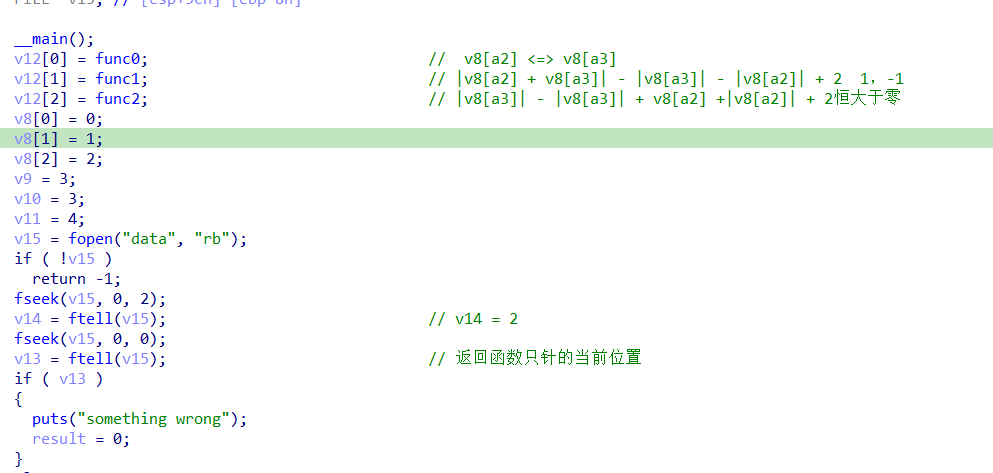
开头三个函数，之后打开读取一个文件，根据要求，需要达到get_key函数，看到判断
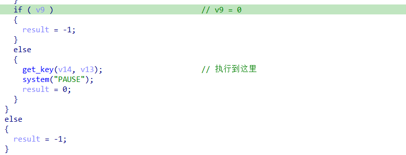
要想执行，v9就等于0，但是v9的初始值确定是3，并且再也没有对他进行改变，继续向上分析。
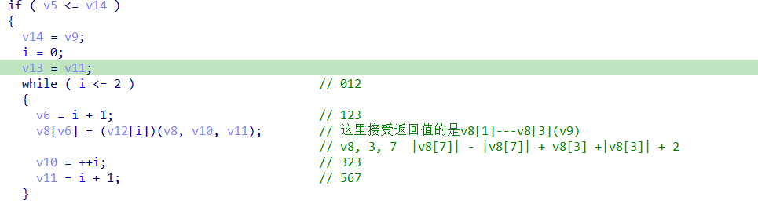
这里看到端倪，v8的长度是3，但是在这个循环中，v8数组从1索引到了3，多出来了一个，到栈中去看一下。
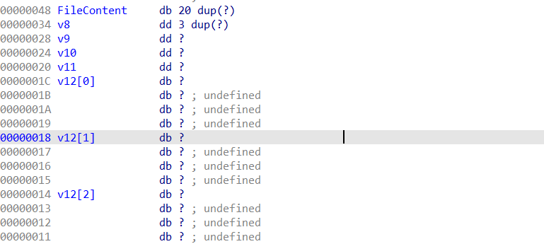
根据ida里给的数据类型，在栈中可以确定一下每一个变量的关系。
发现v8溢出的一个正好对应着v9的值，但是v9对应的函数是func2，这个函数根据分析，他的返回值恒大于零，但func1函数的返回值可能是0，所以这里的思路就是：
通过栈溢出利用func0将func1和func2进行交换，然后构造-1和1，将其返回值（v9）置零
构造溢出
文件内容大小是20字节，然后需要覆盖到func0的两个参数，把func0的参数改成func2和func1，这样实现一个函数顺序的交换，最后让他顺利得0。
func1 》 |v8[a2] + v8[a3]| - |v8[a3]| - |v8[a2]| + 2，这里知道这两个值要是-1和1或者是0和-1，这里用 0和-1 来构造溢出。
溢出来自读取的文件，创建一个data文件，先构造20个0把正常区域填满，之后在栈中看到，func1和2距离v8的距离是28和32，但是这里是dword数据类型，所以就是7和8（计算到v8的距离是因为这里要将其当作v8数组的两个元素进行交换，也就是为了确定这个函数的后面的两个参数，这里就是7，8）。
交换了两个函数之后，func1函数的参数就变成了v8, 2, 3，就是对v8[2] 和 v9进行了运算。这样就得到v9的初始值需要时-1，才能满足方程：
|v8[a2] + v8[a3]| - |v8[a3]| - |v8[a2]| + 2
所以可以构造出文件：
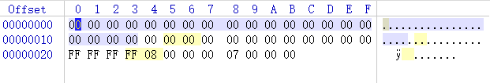
动调检验
第一次循环：
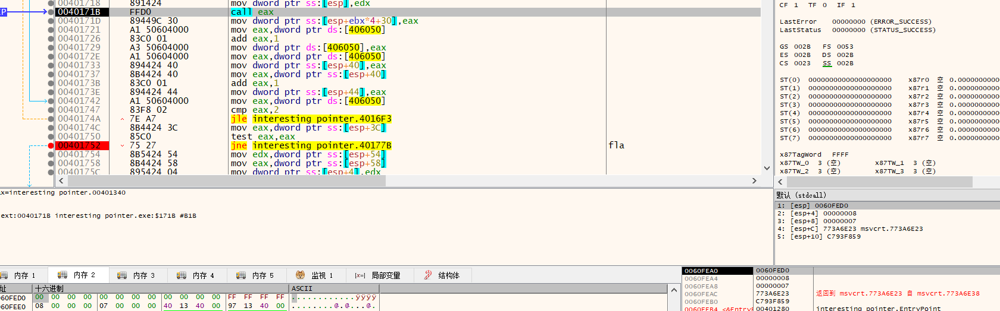
看到这里栈上的参数是v8数组地址，和7和8，v8的数组的内容是
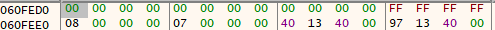
就是刚刚覆盖的内容。
第二次循环：
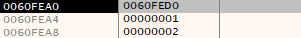
栈上的数据已经正常了，要跳转的函数就刚才交换过的函数
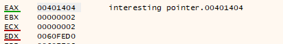
最后一次循环：
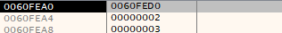
栈上的数据是2和3，对应内存中的数据也是
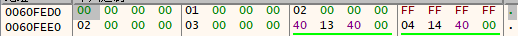
2和-1，执行之后返回值为0，
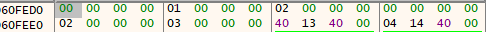
然后运行就能看到flag了。
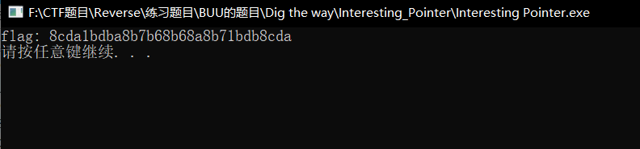
总结：
构造输入，通过数组越界来修改变量，注意int类型大小4字节，小端序。